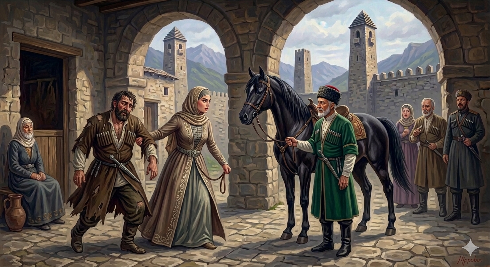

И.А. Дахкильгов. Хьехаме дувцарш - поучительные рассказы-притчи.
И.А. Дахкильгов. Хьехаме дувцарш - поучительные рассказы-притчи. Из ингушского фольклора.

Дикача сесагах
Вай мехкара хьаж-ц1а бахача нахах ца1 къаьста виса хиннав. Ц1енга сатессад цо. Х1ама ховча цхьан сагага хаьттад цо, ц1енах ше мишта кхетаргвар-хьоаг1, аьнна. Вокхо аьннад: “Д1арча маьждиге п1аьраска дийнахьа массарел т1ехьаг1а маьждига чура араваьнначунга деха 1а хье ц1авигалга”. Иштта из саг белгал а ваь, т1аваха дийхад укхо. Воккхо хаьттад: - Мича кхача везаш ва хьо? - Наьсаре кхача везаш ва со, - аьннад. - Хьат1аха са дин т1а т1ехьашкара, ши б1арг д1а а бувшабе, - аьннад. Шийга аьннад даьд. Фега г1олла ше масса хьош, т1аккха лаьтта воссавеш хоаденнад къонахчоа. Наьсарен арахьара 1ул д1алехкача метте латташ хиннав. Хьавоалаваьча къонахчунга аьннад укхо: - Хьавувца хье малав, ха безам бар са хьанна баркал ала дез аз. - Со малав ха хьай безам бале, кхоана укх бай т1а отта, укхаз бажаш ер са ди хургба хьона. 1а из човхабича, цо хьо са ц1ен т1авоалавергва. Шоллаг1ча дийнахьа дин т1ехьа волавенна ваха цхьан коа т1а эттав къонах. Кхайкхача, саг аравоалаш хиннавац. Т1аккха коа хьачуерзаш цхьа сесаг б1аргаейнай укхунна. Ги а велла вахьаш хиннав цо дурт1аза ваьнна веха вола цхьа къонах. Аьннад цу сесаго: - Хьажий-ц1аг1ара хьо ц1авоалаваьр со яр хьона. Ер са мар хоарцахьа лелаш, къаракъаш мелаш, наха кач ухаш воллашехьа ер ловш, укхунга ладог1аш а хьожаш а со хилар бахьан долаш Далла деннад сона х1арача п1аьраска дийнахьа Макка яха а цигач ламаз де а.
РУССКИЙ
О хорошей жене
Некогда наши паломники пошли в Мекку. Паломничество закончилось, но один из них задержался в Мекке. Вскоре и ему захотелось вернуться домой. Об этом он заявил в Мекке святому человеку, который сказал: “В пятницу в мечеть войдет раньше всех и выйдет позже всех один человек. Попроси отвезти себя домой”. Паломник выследил этого человека и попросил его отвезти себя домой. - Куда тебе надо ехать? – спросил богомолец. - Мне надо в Назрань, - ответил паломник. - Садись сзади на коня и зажмурь глаза. Он так и сделал. Мужчина почувствовал, что его с огромной скоростью несет по воздуху, потом конь опустился на землю. Паломник увидел себя на краю родного села, на пастбище. Он спросил: - Скажи, кто ты? Я должен знать, кого мне благодарить. - Если ты желаешь узнать, кто я, приходи завтра сюда, на пастбище. Здесь будет пастись мой конь. Вспугни его и иди за ним, он приведет тебя к моему двору. На второй день пошел паломник за конем, и тот привел его в один двор. Окрикнул он, но никто не появился. В это время во двор вошла женщина, волоча на себе пьяного мужчину. Внеся его в дом, женщина сказала: - Это я привезла тебя из Мекки. Благодаря тому, что я хорошо обращалась с мужем, хотя он пьяница, драчун и бездельник, бог наградил меня способностью в мгновение ока переноситься в Мекку и совершать там пятничный намаз.
ENGLISH
A good wife
Once upon a time, our pilgrims set off for Mecca. When the pilgrimage ended, one of them stayed behind. Soon, he too felt the urge to return home. He confided this to a holy man in Mecca, who said: 'On Friday, one man will enter the mosque before everyone else and leave after everyone else. Ask him to take you home.” The pilgrim tracked down this man and asked him for a lift. 'Where do you need to go?' asked the devout man. “Nazran,” replied the pilgrim. “Sit behind me on the horse and close your eyes.” He did just that. He felt himself being carried through the air at tremendous speed before the horse landed on the ground. The pilgrim found himself on the edge of his native village in a pasture. He asked, ‘Who are you? I must know whom to thank.” “If you want to know who I am, come to the pasture tomorrow. My horse will be grazing here. Startle him and follow him; he will lead you to my yard.' The next day, the pilgrim followed the horse and it led him to a yard. He called out, but no one appeared. At that moment, a woman entered the yard, dragging a drunken man behind her. After carrying him into the house, the woman said, “It was I who brought you back from Mecca. Because I treat my husband well, even though he is a drunkard, a brawler and a good-for-nothing, God has rewarded me with the ability to transport myself to Mecca in the blink of an eye to perform Friday prayers.”
НОХЧИЙН
Дикачу зудчух
Вай махкера хьаьжин-ц1а бахначу нахах цхьаъ къаьстина висна хилла. Ц1а сатесна цо. Х1ума хуучу цхьана стаге хаьттина цо, ц1енах ша муха кхетар вар хьовх, аьлла. Вукхо аьлла: “Д1о маьждиге п1ераска дийнахь массарал т1ехьа маьждиган чуьра араваьллачуьнга деха ахь хьо ц1авигар”. Иштта иза стаг билгала а вина, т1евахна дехна х1окхуо. Вукхо хаьттина: - Мича кхача везаш ву хьо? - Наьсаре кхача везаш ву со, - аьлла. - Схьат1ехаа сан дин т1е т1ехьашкара, ши б1аьрг д1а а къовла, - аьлла. Шега аьлларг дина. Х1аваэхула ша маса хьуш, т1аккха лаьтта воссавеш хааделла къонахчун. Наьсарен арахьара бажа д1алохкучу метте лаьтташ хилла. Схьавалавинчу къонахчуьнга аьлла х1окхуо: - Схьавийца хьо мила ву, хаа безам бар сан хьанна баркалла ала деза ас. - Со мила хаа хьай безам балахь, кхана х1окху бай т1е х1отта, х1оккхузахь бежаш х1ара сан дин хир бу хьуна. Ахь иза човхабича, цо хьо сан ц1ен т1е валор ву. Шолг1ачу дийнахь дин т1аьхьа волавелла вахан цхьана ков т1е х1оьттина къонах. Кхайкхича, стаг араволуш хилла вац. Т1аккха ков схьачуйерзаш цхьа зуда б1аргайейна х1окхунна. Ги а воьллина вохьуш хилла цо т1урт1аз ваьлла вехна вола цхьа къонах. Аьлла цу зудчо: - Хьажийн ц1ера хьо ц1авалийнарг со йар хьуна. Х1ара сан майра харцахьа лелаш, къаьркъанаш муьлуш, нахана коча оьхуш воллушехь х1ара ловш, х1окхуьнга ладуг1уш а хьожуш а со хилар бахьана долуш Далла делла суна х1ор п1ераска дийнахь Макка йаха а цигахь ламаз дан а.
ПОГОВОРКИ